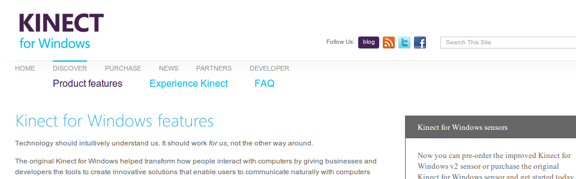
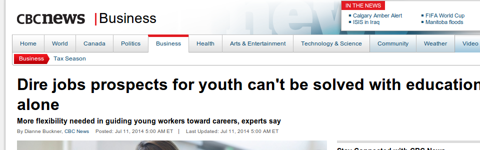

Welcome
This website contains any information
pertaining to my
professional career. In the above menu you will find my resume,
personal information, collected work, tutorials, and much more.
I hope that this site will not just be used for professional
means, but can also be a place for interesting material
pertaining to education, as well as my personal hobbies. If
you need any more information, do not hesitate to e-mail me
through the contacts page.
-

Kinect has just released the second version
of the Kinect hardware, soley for windows. At the moment it comes
with a fairly high price tag, but many enthusiasts anticipate it to
drop in the coming months.
Click to read more . . .
-
Make sure to check out my collected works section.
Here you'll find tutorials, resources, videos, and a special page on
interactive technology in the classroom.
Click here to see . . .
-

A recent story from CBC reiterating that a
university education isn't what it used to be. It's up to us as teachers
to educate students for their lives, not just post-secondary education.
There are many other fields and paths, as equally rewarding, which would
help to benefit society as a whole.
Click to read more . . .